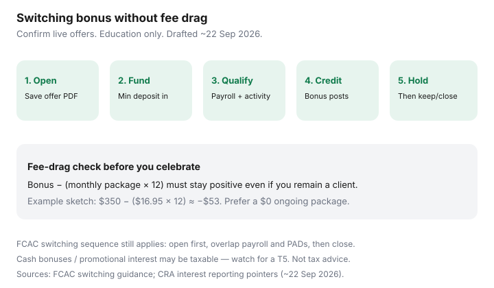

Personal Finance · Canada
Canadian Bank Switching Bonuses: How to Capture Cash Without Creating Fee Drag
Canadian bank switching bonuses look like free money until the monthly package fee, a missed direct-deposit window, or a clawback erases the cheque. Households chase a $200–$400 tile, move payroll once, then bleed $15–$30 a month for a year. The job is not “collect every promo.” It is capture cash without creating fee drag.
This is a switching-bonus playbook tied to FCAC switching steps and everyday fee design. Bonus amounts and eligibility change. Confirm the live offer page. Facts below are framed for readers around 22 Sep 2026. Education only — not deposit advice.
Disclosure: Banking and HISA accounts are offer types. Saving Optimizer may later add partner links. We do not currently claim bank partnerships, and we do not invent live bonus amounts. This is education. Confirm eligibility, CDIC membership, fees, and tax treatment with the institution and, if needed, a tax professional.
Key takeaways
- Map the eligibility window, minimum funding, and direct-deposit rules before you open — not after payroll is mid-move.
- Stack payroll, bill PADs, and e-Transfers on a calendar so you meet the bonus without NSF races.
- Reject any package whose ongoing fee would erase the cash inside twelve months.
- Use a timeline: open → fund → meet criteria → hold period → keep as no-fee or close cleanly.
- Assume cash bonuses and promotional interest can be taxable; watch for a T5.
Map eligibility windows and direct-deposit requirements
Before you click “open,” screenshot or save the offer PDF. Write five facts on one line:
- Who qualifies. New-to-bank only? New-to-product? Employees of a listed company? Existing clients often fail quietly.
- Funding minimum. A one-time deposit, an average monthly balance, or both.
- Direct deposit. Payroll only, or any electronic credit above a dollar floor? EQ-style rate bonuses and Big-5 cash offers use different definitions — read the list of eligible deposits.
- Bill-pay or debit activity. Some offers need three Interac purchases or two bill payments in 60 days.
- Credit date and clawback. When the cash posts, and how long the account must stay open afterward.
FCAC’s switching guidance still applies underneath the promo: open the new account first, move money with an overlap, then close. A bonus does not shorten the overlap. See the 14-day switch plan.
| Gate | What to write down | Fail mode |
|---|---|---|
| Eligibility | New client / excluded provinces / age | Open account, never get paid |
| Direct deposit | Payroll vs any EFT; dollar floor; months required | Move rent PAD instead of payroll — no credit |
| Hold period | Days after credit before you may close | Close early; clawback |
| Ongoing fee | Monthly package after promo; waiver rules | $300 bonus − $16.95 × 12 = net loss |
Stack payroll, bills, and e-Transfers without missing the bonus
Treat the promo month like a project, not a vibe. Calendar:
- Day 0: Open account. Fund the minimum from the old bank with an EFT you can afford to leave parked.
- Day 1–3: Submit the payroll change to your employer. Keep one full pay cycle on the old account until the first deposit lands in the new one.
- Day 3–10: Rewrite the largest PADs (rent/mortgage, insurance, utilities) only after the float is safe. Do not rewrite every PAD the same morning payroll might bounce.
- Activity week: Complete any required debit or bill-pay counts with real household bills — not fake self-transfers that the terms exclude.
If the offer needs “payroll” specifically, an Interac e-Transfer from your spouse does not count. If it needs “electronic deposits,” a government benefit might. The terms page wins over a Reddit anecdote.

Avoid new monthly fees that erase the cash
Run the twelve-month math before you celebrate. A labelled $350 bonus against a $16.95 package is about −$53 after a year if you never waive the fee. Prefer no-fee digital chequing (Simplii, Tangerine, and similar offer types) or an FCAC low-cost account commitment path when a Big-5 leftover is temporary. Pair this with waive-or-leave package fees and a no-fee stack.
Also price ATM access. A bonus bank with out-of-network fees of $2–$5 per withdrawal can erase $100 of cash in a commute-heavy month. Map your cash habits before payroll moves.
Timeline: open → fund → meet criteria → close or keep
Decide the end state on day one:
- Keep: The everyday package is $0 (or waived forever), ATM access fits, and you like the app. The bonus is gravy.
- Close after hold: You only wanted the cash. Calendar the clawback date + seven days. Move payroll back or onward to your permanent no-fee stack first. Leave a written zero balance. Do not abandon an account with a PAD still attached.
Registered transfers (TFSA/RRSP) still take business days — often a week or more. Do not time a bonus close against a registered move. CDIC categories still matter if you temporarily hold large cash at two members; see CDIC coverage when you split banks.
Tax note: bonuses can be taxable interest/other income
Promotional cash is often interest or other income. Banks commonly issue a T5 for interest. Other credits may still be taxable even without a slip you expected. Keep the offer email and the credit line on your statement for tax season. Non-registered HISA interest is taxable; interest inside a TFSA is not — but stuffing a bonus into a TFSA still uses contribution room. Confirm treatment with CRA guidance or a preparer. Not tax advice.
A switching-bonus checklist
- □ Offer PDF saved; eligibility and clawback dates written.
- □ Twelve-month fee math shows a net gain even if you stay.
- □ Payroll change submitted; old account funded through one overlap cycle.
- □ Required activity (deposits, bills, debit) scheduled with real transactions.
- □ Hold-period reminder set; keep-or-close decision made.
- □ Tax slip folder noted for next spring.
Sources & date stamps
- FCAC — changing financial institutions / switching bank accounts guidance (pages used ~22 Sep 2026).
- FCAC — low-cost account commitment context used with package-fee guides (commitment framing in force from 1 Dec 2025; verify live).
- CDIC — deposit insurance categories when cash temporarily sits at more than one member (used ~22 Sep 2026).
- CRA — interest and other income reporting; T5 slips for interest (educational pointer only, used ~22 Sep 2026).
Frequently asked questions
Are Canadian bank switching bonuses taxable?
Often yes when the bank pays cash interest or a promotional credit treated as other income. Issuers commonly issue a T5 for interest. Confirm how the promo is worded and keep the tax slip. This is education, not tax advice.
How long should I keep the new account open?
Read the fine print. Many bonuses require the account to stay open and funded for 60–180 days after the credit posts. Closing early can claw the cash back. Calendar the hold date before you open.
Should I switch payroll for a $300 bonus?
Only if the everyday package is still $0 or near $0 after the promo, ATM access fits, and you can meet direct-deposit rules without NSF risk. A $300 bonus erased by twelve $16.95 fees is a loss.
Do credit unions run switching bonuses?
Sometimes. Credit unions may use provincial deposit insurance instead of CDIC. Compare the fee schedule and insurance logo the same way you would for a bank promo.
Can I stack a HISA promo with a chequing bonus?
Sometimes across different institutions. Inside one member, read whether the bonus excludes other offers. Never invent eligibility — the application page wins.